I finally went through my icons collection and this is linked list of free icon libraries I use for development. Most of icons are suitable for web and desktop development, lately I use them for Dynamics CRM development.
I keep all icons in their own folder and use file search when I need specific icons.
Here is the list… If you have other suggestions, let me know!
Updates:
2010-08-10 Update: Added ”Boolean” pack.
ASP.NET Icons
390 icons, 16x16, GIF
http://www.freeiconsdownload.com/Free_Downloads.asp?id=63
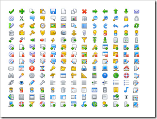
Acxialis – Web Mini, Part 1
267 icons, 16x16, PNG, GIF or ICO
http://www.axialis.com/free/icons/
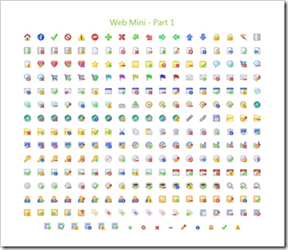
Boolean
111 icons, 16x16, PNG
http://prax-08.deviantart.com/art/Boolean-1-1-166457851
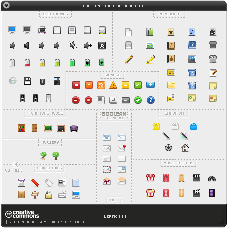
Diagona
400 icons, 16x16 and 10x10, PNG
http://p.yusukekamiyamane.com/
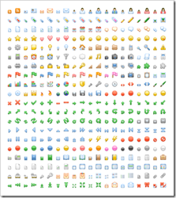
FamFamFam – Silk Icons
1000 icons, 16x16, PNG
http://www.famfamfam.com/lab/icons/silk/
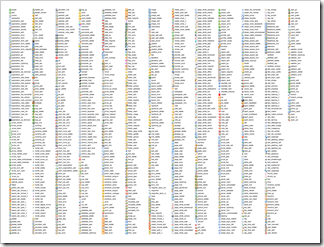
FamFamFam – Flag Icons
247, 16x16, PNG and GIF
http://www.famfamfam.com/lab/icons/flags/
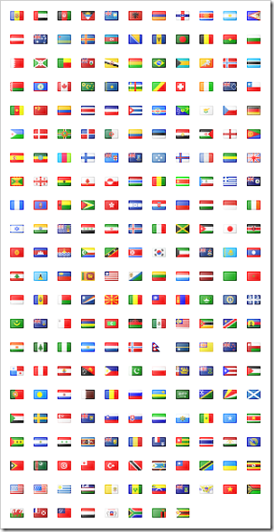
FamFamFam – Mini
144, 16x16, GIF
http://www.famfamfam.com/lab/icons/mini/
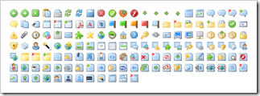
FatCow - Farm Fresh Web Icons
1400 icons, 16x16 and 32x32, PNG
http://www.fatcow.com/free-icons/
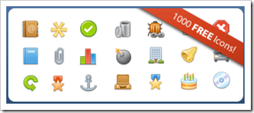
Fugue Icons
6000+ icons, 16x16, PNG
http://p.yusukekamiyamane.com/
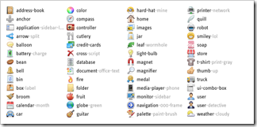
Gallery 2 Icons
77 icons, 20x16, GIF
http://paularmstrongdesigns.com/projects/gallery-2-icons/
LED Icons Set
500+ icons, 16x16, PNG
http://led24.de/
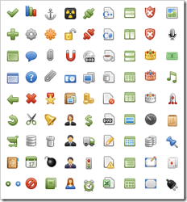
Mini Pixel Icons
320 icons, 14x14, GIF
http://icondock.com/free/mini-pixel-icons
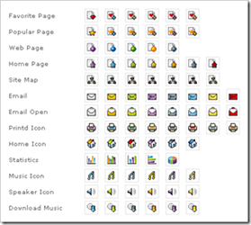
SplashyIcons
483 icons, 16x16, PNG
http://splashyfish.com/icons/
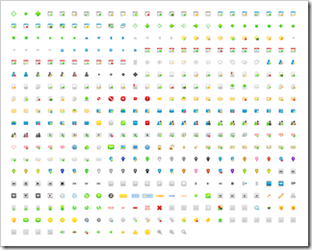
Tango Icon Library
645 icons, 16x16, 22x22, 32x32, PNG
http://tango.freedesktop.org/Tango_Icon_Library
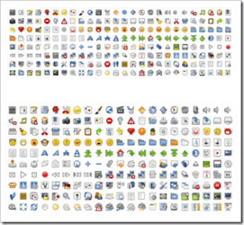
TwoTiny + Expansion Pack
121 icons, 16x16, GIF
http://code.google.com/p/twotiny/
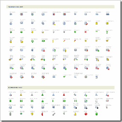
Vaga
60 icons, 16x16, PNG
http://www.tenbytwenty.com/products/icon-sets/vaga
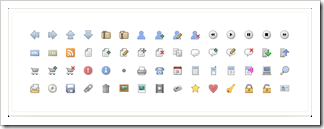
Free Web Design Icons Set
310 icons, 16x16, PNG
http://semlabs.co.uk/journal/free-web-design-icon-set
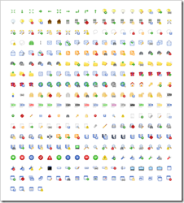
Xiao Icon
72 icons, 16x16, PNG
http://www.ineversay.com/my-works/xiao-icon.html
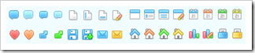